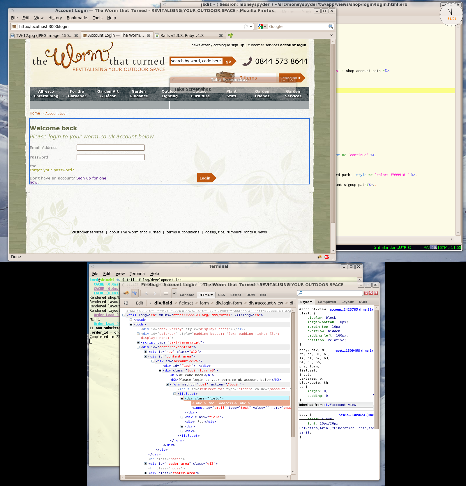

Here’s my Ruby / Rails development environment. I use jedit, firefox and gnome-terminal. My operating system of choice is Ubuntu (the rich mans OS X).
What you won’t see are: email, IM. I switch to a different work space to launch thunderbird or pidgin when I need to communicate. More importantly, I close communication apps when I’m finished communicating.

I use a laptop (lower screen) with an external monitor (upper screen). There is black area around the bottom screen because the external monitor is wider than the laptop screen.
Documentation
My main sources of reference for daily development are:
I download all documentation onto my latop so I can still work without a connection to the internet.
I also have quite a few pdf books for reference. I use gnome-search to search for them or text within.
Text editor
I use the mighty jEdit with the following plugins:
- candy folds
- FTP
- Find file
- Sessions
- Abbrevs
The complete awesomeness of jEdit is a topic for another article. Suffice to say that its a great editor for Ruby & Rails development. Code snippet expansion, multiple select, rectangle select, macro recording, searchable clip board – it’s all there.
Shell
The standard gnome-terminal is enough for me. I’ve set up the following aliases in my ~/.bash_profile to cut down on keystrokes.
alias 7ci='svn ci -m ' alias 7st='svn st --ignore-externals | egrep "(M|A|D|\?)" ' alias dm='rake db:migrate' alias g='git ' alias j='~/bin/jedit -reuseview ' alias tst='ruby -Ilib:test '
Web browser
There really only is one game in town when it comes to web development: firefox with the firebug & web developer plugins. I usually have these three tabs open:
- bug tracker
- localhost developement server
- rails/ruby reference
I tried the selenium IDE plugin but it’s too much hassle to set up & maintain those test suites. They just keep on breaking. I’ll keep looking for a browser recorder because the promise of automated broswing is too great.
For cross browser testing I have a Virtual box windows XP machine with ie 6. I’ve installed the my debug bar plugin, which lauches ieTester allowing me to open up tabs for each version of ie.
That’s it! Hope you found something that makes your development environment more productive.